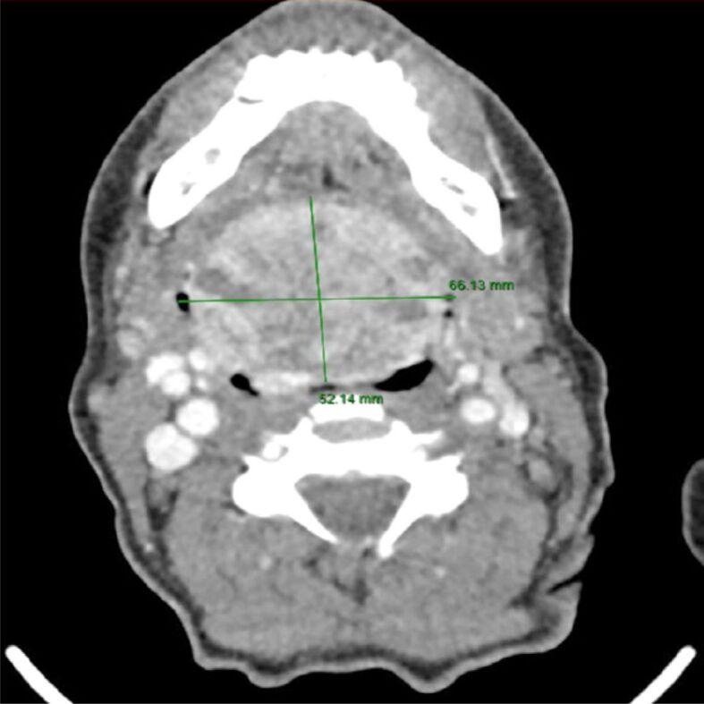
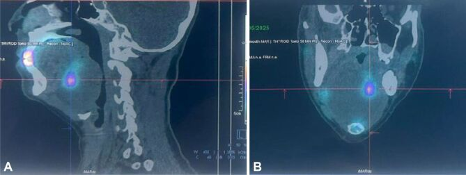
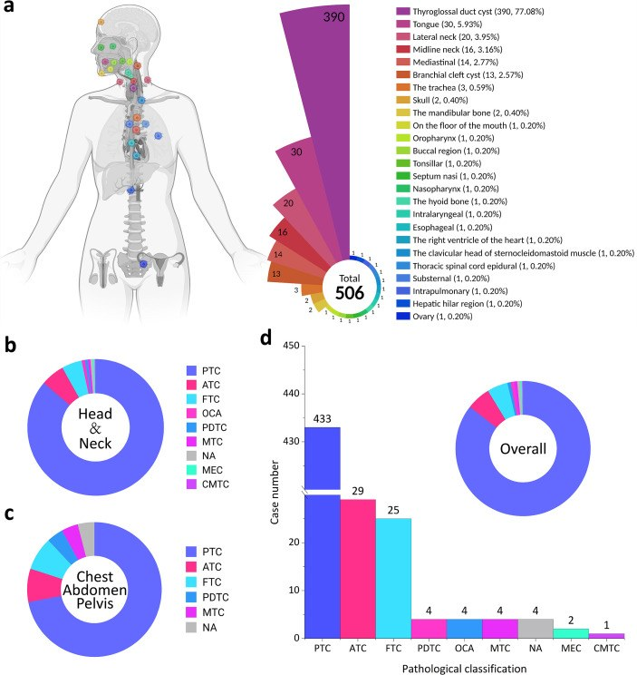

1952 — Ung thư tuyến giáp phát sinh trong bướu giáp lạc chỗ (carcinoma arising in ectopic thyroid): khối đáy lưỡi "trắng" trên CT — khi nào chỉ theo dõi, khi nào mổ + iod phóng xạ
Tags: pattern:khoi-day-luoi pattern:tang-dam pattern:voi-hoa pattern:ngam-thuoc-manh pattern:hach-co vung:loi vung:san-mieng vung:tuyen-giap vung:co protocol:SA-co protocol:xa-hinh protocol:SPECT-CT protocol:CT-co-can-quang protocol:MRI protocol:DSA-nut-mach incidentaloma:khoi-day-luoi
Mức chắc chắn (certainty): tổng hợp y văn (literature synthesis) — ghép tổng quan hệ thống 506 ca ung thư giáp lạc chỗ (ETC) từ 348 bài (Front Endocrinol 2026, PMC13259913, CC BY 4.0), ca ung thư NOS trong bướu giáp lạc chỗ dưới lưỡi 66 × 52 mm có nút mạch trước mổ (Rom J Morphol Embryol 2025, PMC13092302, CC BY-NC-SA 4.0), ca PTC đáy lưỡi 13 tuổi (Front Oncol 2022, PMC9716014), tổng quan SPECT/CT–PET/CT (Diagnostics 2024, PMC11241737) và bài nền 1899 về bướu giáp lạc chỗ lành tính. Không có ca do nhóm tự chụp. Số nào nguồn không nêu ghi "chưa rõ".
Bốn câu hỏi của một khối đáy lưỡi đường giữa: (1) Đây là mô giáp lạc chỗ, nang giáp–lưỡi hay u khác? (2) Vì sao nó tăng đậm trên CT không cản quang — iod, máu hay vôi hóa? (3) Trong khối lành tính đó đã có ung thư chưa? (4) Cắt bao nhiêu, có cần iod phóng xạ, và có phải cắt luôn tuyến giáp nguyên vị? Câu chốt: ung thư hóa trong mô giáp lạc chỗ < 1% các ca lạc chỗ, nhưng khi đã có thì 85,6% là ung thư nhú (PTC) và 22,1% đã có hạch/di căn lúc chẩn đoán (PMC13259913). Vì vậy khối lạc chỗ "lành tính" không được cắt mù, cũng không được theo dõi mù: phải chứng minh bằng xạ hình + SA + CT và đánh giá hạch cổ trước khi quyết định.
1. Tổng quan bệnh học – cơ chế hình ảnh: vì sao khối này "trắng" và vì sao nó có thể là ung thư
1.1 Phôi thai và dịch tễ: từ nụ giáp ở sàn hầu đến ung thư
- Tuyến giáp phôi thai đi từ lỗ tịt (foramen caecum) ở đáy lưỡi xuống trước khí quản. Dừng dọc đường = mô giáp lạc chỗ; dừng tại đáy lưỡi = bướu giáp lạc chỗ (lingual thyroid), chiếm ~90% các ca lạc chỗ, sau đó là dưới lưỡi, xương móng, cổ bên (PMC13092302).
- Dịch tễ: mô giáp lạc chỗ gặp 0,3–1/100.000 người (PMC11241737); 47% không triệu chứng; suy giáp lâm sàng > 70% (PMC13092302). Bệnh thường lộ ra ở thập kỷ 2–4 khi nhu cầu TSH tăng (dậy thì, thai kỳ, thiếu iod).
- Ung thư trong mô lạc chỗ: < 1% các ca lạc chỗ (PMC13092302); tính theo ung thư giáp thì ETC chiếm 0,3–0,5%, và trong 110 năm y văn chỉ có ~132 ca được báo cáo (PMC9716014) — nay gom được 506 ca (PMC13259913).
1.2 Bộ số của 506 ca ETC — dùng để hiệu chỉnh trực giác
| Biến số | Số liệu (PMC13259913) |
|---|---|
| Số ca / số bài | 506 ca từ 348 bài |
| Tuổi trung bình | 41,6 ± 17,5 (khoảng 8–97); 72,8% ≤ 50 tuổi |
| Giới | nữ 62,4%, nam 37,6% — tỉ lệ nữ:nam 1,7:1 |
| Vị trí | ống giáp–lưỡi 390 (77,08%), lưỡi 30 (5,93%), cổ bên 20 (3,95%), đường giữa 16 (3,16%), trung thất 14 (2,77%) |
| Mô bệnh | PTC 433 (85,6%), ATC 29 (5,7%), FTC 25 (4,9%), PDTC 4, OCA 4, MTC 4 |
| Giai đoạn lúc chẩn đoán | khu trú 394 (77,9%); hạch hoặc di căn xa 112 (22,1%) |
| Tuyến giáp nguyên vị | có 447 (88,3%), không có 30 (5,9%); trong nhóm có mô bệnh: lành 209 (46,8%), ác 102 (22,8%) |
| Điều trị | mổ 98,8%, iod phóng xạ (RAI) 40,6% |
| Tiên lượng xấu | tuổi > 50: HR 3,75 (95% CI 1,92–7,32); vị trí ngoài đầu cổ (ngực/bụng/chậu): HR 7,23 (95% CI 2,61–20,04) |
| Tái phát đầu cổ | 9,7% (31/321) sau điều trị |
| Cắt tuyến nguyên vị có lợi? | sau ghép điểm xu hướng: tái phát 6,0% (3/50) vs 4,0% (2/50), McNemar P = 1,000 → không chứng minh lợi ích |
- Đọc bảng này đúng cách: con số 88,3% có tuyến giáp nguyên vị là điểm khác biệt lớn so với bài 1899 (nơi > 70% không có mô giáp ở cổ). Nghĩa là không được mặc định "khối này là tuyến giáp duy nhất" — nhưng cũng không được bỏ qua nhóm 5,9% không có tuyến nguyên vị, vì cắt khối đó = suy giáp vĩnh viễn.
1.3 TẠI SAO khối tăng đậm trên CT không cản quang (vật lý, không phải "dấu hiệu ác")
- Mô giáp tập trung và dự trữ iod trong thyroglobulin. Iod có Z = 53; ở mức năng lượng tia X chẩn đoán (80–120 kVp), hiệu ứng quang điện (photoelectric) tỉ lệ với Z³ nên mô giáp hấp thụ tia mạnh hơn cơ xung quanh → 60–100 HU (cơ lưỡi ~40–50 HU). Một khối đáy lưỡi tăng đậm đồng nhất, không vôi hóa, không ngấm thuốc là hình ảnh kỳ vọng của mô giáp, không phải "khối đặc nghi ngờ".
- Vôi hóa: gặp trong mô giáp lạc chỗ lành (thoái hóa, nang keo) — ca PMC13092302 không có vôi hóa; ca PMC8556010 (dẫn qua bài 1899) có vôi hóa viền trên khối 26 × 24 × 19 mm. Vì vậy vôi hóa KHÔNG đồng nghĩa ung thư; điều đáng ngờ là vôi hóa viền mất đều + nốt đặc không đồng nhất trong khối.
- Ngấm thuốc: tuyến giáp có mạng mao mạch dày → ngấm mạnh, đồng nhất, giữ thuốc thì muộn. Trong ca PMC13092302, khối được mô tả là "highly vascularized" đến mức phải nút mạch chọn lọc trước mổ; đây là lý do không chọc bừa vào khối đáy lưỡi.
- MRI: thyroglobulin/colloid làm T1 hơi tăng so với cơ, T2 tăng; mô giáp không hạn chế khuếch tán mạnh. Ung thư trong khối thường chỉ lộ ra qua bờ không đều, xâm lấn cơ lưỡi, hạch hoại tử — không có một "tín hiệu ung thư" riêng.
- TẠI SAO khối lớn gây khó thở: khối phát triển trong khoang kín của sàn miệng, đẩy lưỡi ra trước và xuống, làm hẹp hầu miệng–hầu họng. Ca PMC13092302: khối 52 × 60 × 66 mm xâm lấn hầu miệng và hầu họng, gây hẹp lòng rõ rệt, phải mở khí quản trước khi cắt.
1.4 Vì sao "ung thư trong bướu lạc chỗ" khó chẩn đoán hơn ung thư giáp thường
- Không có vỏ giáp bao quanh, mô lạc chỗ nằm lẫn trong cơ lưỡi → xâm lấn vi thể vào cơ không phân biệt được với mô lạc chỗ bình thường (mô giáp vốn nằm rải trong cơ).
- FNAC khó và nguy hiểm: khối sâu, nhiều mạch, chảy máu; ca PMC13092302 là một khối tăng sinh mạch mạnh, phải nút mạch trước mổ.
- Phải loại trừ di căn từ một ung thư giáp nguyên vị ẩn: tiêu chuẩn mô bệnh là thấy nang giáp bình thường + không có mô lympho/nang hạch trong tổn thương (PMC13259913); nếu chỉ thấy mô giáp trong một "hạch" thì phải nghĩ di căn, không phải lạc chỗ.
2. Mẫu hình + chẩn đoán phân biệt theo vị trí (gamut)
- Đường giữa, đáy lưỡi (ngang lỗ tịt): bướu giáp lạc chỗ lành → ung thư trong bướu lạc chỗ → nang giáp–lưỡi (thường dưới xương móng, không phải đáy lưỡi) → u tuyến nước bọt nhỏ → ung thư biểu mô vảy (SCC) → lymphoma → u mạch máu/dị dạng mạch → schwannoma.
- Đường giữa dưới móng: nang giáp–lưỡi (TGDC) và ung thư trong TGDC (chủ yếu PTC, chiếm phần lớn nhóm 390 ca TGDC ở bảng trên).
- Cổ bên: mô giáp lạc chỗ cổ bên (hiếm) vs hạch di căn của ung thư giáp nguyên vị — đây là phân biệt quan trọng nhất; cách chốt là tìm tuyến giáp nguyên vị + mô bệnh (bài 230).
- Trung thất: bướu giáp lạc chỗ trung thất (14 ca, 2,77%) vs u tuyến ức, lymphoma, u quái.
- Buồng trứng: struma ovarii (mô giáp trong u quái) — cùng bản chất "mô giáp ngoài cổ", khác đường phôi thai.
- Gợi nhớ theo cơ chế: khối tăng đậm + có iod → mô giáp; khối dịch + vỏ mỏng → nang; khối hoại tử + hạch → ung thư/di căn; khối canxi hóa thô + mỡ → u quái.
3. Bảng so sánh phân biệt (ma trận đối chiếu)
| Thực thể (entity) | Hình ảnh điển hình | Chốt vào (rule-in) | Chốt loại (rule-out) | Gợi ý xác nhận |
|---|---|---|---|---|
| Bướu giáp lạc chỗ lành | Khối đường giữa đáy lưỡi, tăng đậm đồng nhất trên CT không cản quang, ngấm thuốc đều, bờ nhẵn, không hạch | Tăng đậm kiểu mô giáp + xạ hình tập trung tại khối + tuyến giáp nguyên vị vắng mặt hoặc bình thường | Nốt đặc không đồng nhất, bờ xâm lấn, hạch cổ, lớn nhanh → nghi ung thư | TSH/FT4, xạ hình 99mTc, SA |
| Ung thư trong bướu lạc chỗ | Nốt không đồng nhất trong khối, bờ không đều, xâm lấn cơ lưỡi, hạch cổ; có thể vôi hóa viền mất đều | Hạch cổ + nốt đặc trong khối + xạ hình có ổ tập trung không đều | Khối đồng nhất, không hạch, không đổi sau nhiều năm → nhiều khả năng lành | FNAC dưới SA, CT ≤ 1 mm, mô bệnh sau mổ |
| Hạch di căn ung thư giáp (nguyên vị ẩn) | Khối cổ bên, mất rốn hạch, có vôi hóa/nang, có thể tăng đậm do iod | Mô giáp trong hạch + tìm thấy ung thư giáp nguyên vị | Có nang giáp bình thường trong tổn thương → lạc chỗ, không phải hạch | SA hạch, FNAC + Tg trong dịch hút |
| Ung thư trong nang giáp–lưỡi | Nang dưới xương móng, vỏ dày, nốt đặc trong nang, vôi hóa | Nốt đặc thành phần trong nang + PTC trên mô bệnh | Nang dịch trong, không nốt đặc, không vôi hóa → nang đơn thuần | SA + FNAC thành nang, CT |
| SCC đáy lưỡi | Loét, bờ cứng, hạch hoại tử, xâm lấn lưỡi; thường không tăng đậm trên CT không cản quang | Loét + hạch hoại tử + tiền sử rượu/thuốc lá | Tăng đậm đồng nhất kiểu mô giáp → không phải SCC | Nội soi + sinh thiết |
| Lymphoma | Khối lớn, đồng nhất, ngấm thuốc nhẹ, hạch hai bên | Hạch nhiều tầng + khối đáy lưỡi cùng lúc | Tăng đậm mạnh kiểu mô giáp | Sinh thiết mô lớn, PET/CT |

Ca nam 54 tuổi: khối đáy lưỡi 66,13 × 52,14 mm trên CT dọc, dùng để đo và lập kế hoạch mổ. Nguồn: Rom J Morphol Embryol 2025 (PMC13092302), CC BY-NC-SA 4.0 — hiển thị nguyên bản, không crop.
SPECT–CT (99mTc-pertechnetate) cùng ca: (A) mặt cắt dọc, (B) mặt cắt ngang — ổ tập trung phóng xạ khu trú trong khối, gợi ý một phần mô đang hoạt động mạnh/tân sinh trong bướu lạc chỗ. Nguồn: Rom J Morphol Embryol 2025 (PMC13092302), CC BY-NC-SA 4.0.Vì sao bài này không có ảnh ghép (composite): ba ảnh lâm sàng của ca PMC13092302 là CC BY-NC-SA 4.0 (yêu cầu chia sẻ tương tự) và ảnh còn lại là đồ thị phân bố CC BY 4.0; ghép chúng lại sẽ tạo tác phẩm phái sinh hỗn hợp giấy phép. Nhóm chọn hiển thị nguyên bản từng ảnh thay vì ghép.
4. Protocol chụp + hệ phân độ, điểm chuẩn hóa
4.1 Trình tự bắt buộc (làm sai thứ tự = mất tuyến giáp của bệnh nhân)
- Xét nghiệm trước hình ảnh: TSH, FT4, anti-Tg, thyroglobulin (Tg). Suy giáp gặp > 70%; TSH rất cao (ca PMC13092302: > 48 µIU/mL) giải thích khối phì đại và là chỉ định levothyroxine trước mổ.
- Siêu âm cổ (tuyến giáp nguyên vị + đáy lưỡi + hạch): xác nhận có/không tuyến giáp ở vị trí bình thường — bước này quyết định "khối có phải nguồn giáp duy nhất". Trong ca PMC13092302: không có mô giáp ở giường giáp, khối dưới lưỡi 43 × 20 mm, không đồng nhất, giảm âm.
- Xạ hình tuyến giáp (99mTc-pertechnetate hoặc I-123) + SPECT/CT: chứng minh mô giáp và phân bố tập trung. Ổ tập trung không đều, khu trú trong khối = nghi ung thư (ca PMC13092302). Đây là bước phải làm trước sinh thiết/cắt.
- CT cổ–ngực có cản quang, lát ≤ 1 mm: đo 3 chiều, đánh giá xâm lấn cơ lưỡi/hầu, hẹp đường thở, hạch level I–III, VI, và tìm mô giáp lạc chỗ thứ hai ở trung thất. MRI khi cần mô mềm/đường thở hoặc khi có iod cản quang không thuận lợi.
- FNAC dưới siêu âm chỉ khi kết quả thay đổi xử trí (khối có nốt đặc, hạch nghi); không chọc mù khối mạch máu lớn ở đáy lưỡi.
- Chuẩn bị mổ: nội soi mềm đánh giá đường thở (khối dễ chảy máu khi chạm), mở khí quản khi khối lớn; nút mạch chọn lọc (DSA) trước mổ nếu khối tăng sinh mạch — ca PMC13092302 vẫn mất 500 mL máu và phải truyền máu dù đã nút mạch.
- Sau mổ: RAI khi có chỉ định (40,6% trong 506 ca), levothyroxine ức chế TSH, theo dõi Tg + anti-Tg và SA cổ.
4.2 Khi nào KHÔNG cắt tuyến giáp nguyên vị
- Trong 506 ca, cắt tuyến nguyên vị không làm giảm tái phát sau ghép điểm xu hướng (6,0% vs 4,0%, P = 1,000) → cá thể hóa, không cắt thường quy (PMC13259913). Tuy vậy 22,8% tuyến nguyên vị có mô bệnh ác tính → vẫn phải SA + FNAC tuyến nguyên vị trước khi quyết định để lại.
4.3 Phân tầng theo vị trí và tuổi (dùng cho theo dõi)
flowchart TD
A[Khối đáy lưỡi đường giữa] --> B[TSH + FT4 + SA cổ]
B --> C[Xạ hình 99mTc + SPECT-CT]
C --> D{Có mô giáp tại khối?}
D -->|Không| E[Khối khác: nang giáp-lưỡi, u tuyến, SCC, lymphoma]
D -->|Có| F{Có tuyến giáp nguyên vị?}
F -->|Không| G[Bướu lạc chỗ là nguồn giáp duy nhất: tránh cắt mù, theo dõi hoặc cắt có chuẩn bị]
F -->|Có| H{ Nốt không đồng nhất hoặc hạch cổ }
H -->|Không| I[Theo dõi: TSH, SA mỗi 6-12 tháng]
H -->|Có| J[CT 1 mm + FNAC + đánh giá hạch]
J --> K[Mổ theo nguyên tắc ung thư + nút mạch trước mổ nếu mạch nhiều]
K --> L[RAI nếu có chỉ định + ức chế TSH + theo dõi Tg]
- Ngưỡng hạch đáng ngờ trên SA: trục ngắn > 8–10 mm, mất rốn hạch, vôi hóa, nang hóa, tăng sinh mạch — với ung thư giáp, hạch level VI và II–III là nơi hay gặp nhất.
5. Biến thể bình thường và cạm bẫy
- "Tuyến giáp rỗng" không phải quy luật: 88,3% ca ETC có tuyến nguyên vị; 5,9% không có. Siêu âm phải nói rõ có/không, không suy đoán.
- Vôi hóa ≠ ác tính: mô giáp lạc chỗ lành có thể vôi hóa viền/thô. Chỉ vôi hóa viền mất đều + nốt đặc mới đáng ngờ.
- Tăng đậm trên CT không cản quang ≠ máu tụ: máu cấp 50–90 HU nhưng không ngấm thuốc, không có iod, và không tập trung trên xạ hình; mô giáp 60–100 HU và có tập trung phóng xạ.
- Cạm bẫy "satisfaction of search": thấy khối đáy lưỡi rồi dừng, bỏ sót hạch level VI hoặc mô giáp lạc chỗ trung thất (14 ca, 2,77%).
- Cạm bẫy nang giáp–lưỡi: phần lớn là nang lành; chỉ nốt đặc/thành dày/vôi hóa mới cần FNAC. Sinh thiết mọi nang giáp–lưỡi là overcall.
- Cạm bẫy tư thế: khối lớn ở đáy lưỡi tụt ra sau khi ngửa cổ → nguy cơ tắc đường thở khi gây mê; phải đánh giá bằng nội soi mềm trước.
- Cạm bẫy sau mổ: suy giáp xuất hiện dù để lại một phần mô → kiểm TSH 6–8 tuần sau mổ, không chờ triệu chứng.
6. Tự lượng giá — Blind Quiz
Ca 1 — Nam 54 tuổi, khàn tiếng và khó nuốt tăng dần, BMI 19, mạch 125 lần/phút; TSH > 48 µIU/mL. Nhìn hai ảnh dưới, mô tả trước khi mở đáp án.
- Câu hỏi: (1) Khối nằm ở khoang nào, kích thước bao nhiêu? (2) Ba chẩn đoán phân biệt? (3) Bước hình ảnh nào phải làm trước khi sinh thiết, và vì sao?
Bấm để hiện đáp án
- Dấu hiệu: khối lớn 66,13 × 52,14 mm ở đáy lưỡi/sàn miệng, lan vào hầu miệng – hầu họng, hẹp lòng; trên CT không cản quang khối tăng đậm so với cơ lưỡi.
- Chẩn đoán: ung thư (NOS) phát sinh trong bướu giáp lạc chỗ dưới lưỡi — mô bệnh: tăng sinh xâm lấn, có xâm lấn mạch–bạch mạch, PAX8/TTF-1 dương, Tg dương điểm; không có mô giáp ở cổ.
- Vì sao phải xạ hình trước: xác nhận khối là mô giáp và có/không tuyến giáp nguyên vị — quyết định việc cắt có làm bệnh nhân suy giáp vĩnh viễn hay không.
- Diễn biến thật: nút mạch chọn lọc trước mổ → mở khí quản → cắt qua đường lưỡi; mất 500 mL máu; sau mổ levothyroxine + RAI.
- Nguồn: Rom J Morphol Embryol 2025 (PMC13092302), CC BY-NC-SA 4.0.
Ca 2 — Bản đồ 506 ca: ung thư giáp lạc chỗ xuất hiện ở đâu, và vì sao "lưỡi" chỉ đứng sau ống giáp–lưỡi?

- Câu hỏi: vị trí nào chiếm đa số? Loại mô bệnh nào trội? Điều này thay đổi cách bạn đọc một "khối cổ bên" như thế nào?
Bấm để hiện đáp án
- Vị trí: ống giáp–lưỡi 390/506 (77,08%), lưỡi 30 (5,93%), cổ bên 20 (3,95%), đường giữa 16 (3,16%), trung thất 14 (2,77%) — phân bố men theo đường phôi thai của tuyến giáp.
- Mô bệnh: PTC 433 (85,6%), ATC 29 (5,7%), FTC 25 (4,9%).
- Hệ quả thực hành: một khối cổ bên có mô giáp phải được coi là di căn hạch của ung thư giáp cho đến khi chứng minh ngược — không phải "lạc chỗ lành".
- Nguồn: Front Endocrinol 2026 (PMC13259913), CC BY 4.0.
Bài liên quan chéo
- 1899 – Bướu giáp lạc chỗ ở đáy lưỡi — bài nền: lành tính, xạ hình trước can thiệp
- 230 – Tuyến giáp ACR TI-RADS & hạch cổ — đọc nốt giáp và hạch
- 1622 – Đốt cồn nang giáp lành tính — xử trí nang giáp, khác hẳn khối đặc
- 093 – Hội chứng tĩnh mạch chủ trên — khối trung thất chèn ép
Ảnh
- Bốn ảnh tải từ Europe PMC/PMC, giấy phép ghi từng file trong
images/CREDITS.md. - Không dùng ảnh paywall/AuntMinnie; không tạo ảnh ghép từ ảnh CC BY-NC-SA (xem ghi chú mục 3).
Không dùng để chẩn đoán độc lập khi chưa có người hướng dẫn.